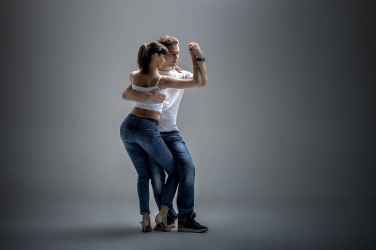

Home
Zero Waste
Urban Gardening
Bachata
A Short History of Bachata

Bachata is a style of dance that originated in the Dominican Republic. It is danced widely all over the world but not identically. The basics to the dance are three-step with a Cuban hip motion, followed by a tap including a hip movement on the 4th beat. The knees should be slightly bent so the performer can sway the hips easier. The movement of the hips is very important because it’s a part of the soul of the dance. Generally, most of the dancer’s movement is in the lower body up to the hips, and the upper body moves much less. In partnering, the lead can decide whether to perform in open or closed position. Dance moves, or step variety, during performance strongly depends on the music (such as the rhythms played by the different instruments), setting, mood, and interpretation. Unlike Salsa, Bachata dance does not usually include complex turn patterns but they are used more and more as the dance evolves. The leading is done just like in most other social dances, with a “pushing and pulling” hand and arm communication. Hand and arm communication is better conveyed when most of the movement is performed by the lower body (from waist down); i.e. hips and footwork. Bachata is commonly known by many as a very sensual dance. To most it may seem that way, however, that is not what it is intended to be taken as. Bachata is a dance, done by a person with another, to express the feelings one has for a specific other. It is believed by most, that the more smoothly and more frequently the hips are used and moved, the more feelings the individual has for the other. With that said bachata originated as a sort of “mating call,” if you were selected for a dance of bachata, you were chosen as a mate, two dances with the same individual, “sealed the deal.” The original dance style from the Dominican Republic in the Caribbean is a basic dance sequence is a full 8 count moving within a square. Dancers in the Western World later began developing a more simple pattern, also in a full 8 count, but with a side-to-side motion. Both Styles consist of 3 steps normal and then a tap step. The tap is often accompanied by a “pop” of the hips, and is sometimes substituted with syncopations (steps in between the beats – some similar to cha-cha-cha steps and others much different). Bachata music has an accent in rhythm at every fourth count. Often, this is when dancers will tap-step & pop their hips – this is called dancing bachata to the music (because the first step after the pop falls on the 1st beat of the measure). But bachata can be danced to different timings as well if it’s danced to one particular instrument instead. The tab or ‘pop’ is done in the opposite direction of the last step, while the next step is taken on the same direction as the tap or pop. The dance direction changes after the tap or fourth step.